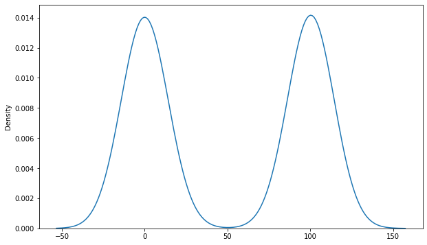

Code
import pandas as pd
import numpy as np
import warnings
warnings.simplefilter(action='ignore', category=FutureWarning)import pandas as pd
import numpy as np
import warnings
warnings.simplefilter(action='ignore', category=FutureWarning)While exploring a Berkeley dataset (separate from babynames) with a million records, you realize that a portion of measurements in different fields are NaN values! You decide to impute these missing values before continuing your EDA. Given the empirical distribution of each of the below variables, determine how to solve the missing data problem. (Note that the data in these graphs are fictional).
Suppose that you plot “cups of coffee sold at V&A Cafe per day” versus “inches of rain per day” across a period of 2 months, shown below. V&A Cafe is not missing any data, but 30% of the data in “inches of rain” are NaN values that have been represented with “-2”, an impossible amount of rain. Which of the following techniques would be most effective in solving the issue of missing data? (Select all that apply)
A. Using the mean to impute the missing values
B. Using the mode(s) to impute the missing values
C. Using the median to impute the missing values
D. Dropping any rows with missing values
E. Imputing missing values through interpolation
Correct Options: A, C, E
Suppose we examine the amount of money lost/gained in a game of poker and see that this variable is missing 1% of its values. Its distribution, shown below, is constructed from all valid (non-NaN) values. Which of the following techniques would be reasonably effective in solving this issue of missing data? (Select all that apply)

A. Using the mean to impute the missing values
B. Using the mode(s) to impute the missing values
C. Using the median to impute the missing values
D. Dropping any rows with missing values
E. Imputing missing values through interpolation
Correct Options: B, D
Suppose that the relationship between students’ time asleep (in hours) and the amount of extra credit they received in Data 100 is shown below. There is no missing data for “hours asleep”, but 0.5% of “extra credit score” is missing. Like in part a, the missing NaN values were replaced with an impossible score of -0.002, making the graph look funky. Which of the following techniques would be most effective in solving this issue of missing data? (Select all that apply)
A. Using the mean to impute the missing values
B. Using the mode(s) to impute the missing values
C. Using the median to impute the missing values
D. Dropping any rows with missing values
E. Imputing missing values through interpolation
Correct Options: D, E
It’s the annual Monopoly World Championship! The finalists: Shawn, Amanda, Neil, and Annie are playing Monopoly, a board game where players pay a price to buy properties, which can then generate income for them. Each property can be owned by only one player at a time. At the end of the game, the player with the most money wins.
Shawn wants to figure out which properties are most worth buying. He creates a DataFrame income with data on the current game state, shown on the left. He also finds a DataFrame properties with data on Monopoly properties, shown on the right.
Both tables have 28 rows. For brevity, only the first few rows of each DataFrame are shown.
# First DataFrame: income
data_income = {
'Player': ['Shawn', 'Amanda', 'Neil', np.nan, 'Shawn', 'Annie', 'Amanda'],
'Property': ['Boardwalk', 'Park Place', 'Marvin Gardens', 'Kentucky Ave', 'Pennsylvania Ave', 'Oriental Ave', 'Baltic Ave'],
'Income Generated': ['$425', '$375', '$200', np.nan, '$150', '$50', '$60']
}
income = pd.DataFrame(data_income)
income| Player | Property | Income Generated | |
|---|---|---|---|
| 0 | Shawn | Boardwalk | $425 |
| 1 | Amanda | Park Place | $375 |
| 2 | Neil | Marvin Gardens | $200 |
| 3 | NaN | Kentucky Ave | NaN |
| 4 | Shawn | Pennsylvania Ave | $150 |
| 5 | Annie | Oriental Ave | $50 |
| 6 | Amanda | Baltic Ave | $60 |
income
Player is the name of the player, as a str.Property is a property currently owned by the player, as a str.Income Generated is the amount of income a player has earned from that property so far, as a str.# Second DataFrame: properties
data_properties = {
'Property': ['Park Place', 'Oriental Ave', 'Vermont Ave', 'Pacific Ave', 'Boardwalk', 'Illinois Ave', 'Atlantic Ave'],
'Property Color': ['Dark Blue', 'Light Blue', 'Light Blue', 'Green', 'Dark Blue', 'Red', 'Yellow'],
'Purchase Price': [350.0, 100.0, 100.0, 300.0, 400.0, 240.0, 260.0]
}
properties = pd.DataFrame(data_properties)
properties| Property | Property Color | Purchase Price | |
|---|---|---|---|
| 0 | Park Place | Dark Blue | 350.0 |
| 1 | Oriental Ave | Light Blue | 100.0 |
| 2 | Vermont Ave | Light Blue | 100.0 |
| 3 | Pacific Ave | Green | 300.0 |
| 4 | Boardwalk | Dark Blue | 400.0 |
| 5 | Illinois Ave | Red | 240.0 |
| 6 | Atlantic Ave | Yellow | 260.0 |
properties
Property is the name of the property, as a str. There are 28 unique properties.Property Color is a color group that the property belongs to, as a str. There are 10 unique color groups, and each property belongs to a single group.Purchase Price is the price to buy the property, as a float.Note: For the properties that are not currently owned by any player, the Player and Income Generated columns in the income table have a NaN value.
(a) What is the granularity of the income table?
Property
(b) Consider the Player and Purchase Price variables. What type of variable is each one? (quantitative, qualitative nominal, qualitative ordinal)
(c) Which of the following line(s) of code successfully returns a Series with the number of properties each player owns? Select all that apply.
income["Player"].value_counts()income.groupby("Player").size()income.groupby("Player").agg(pd.value_counts)| Property | Income Generated | |
|---|---|---|
| Player | ||
| Amanda | [1, 1] | [1, 1] |
| Annie | 1 | 1 |
| Neil | 1 | 1 |
| Shawn | [1, 1] | [1, 1] |
income["Player"].value_counts()Player
Shawn 2
Amanda 2
Neil 1
Annie 1
Name: count, dtype: int64# income["Player", "Property"].groupby("Player").size()income.groupby("Player")[["Player"]].count()| Player | |
|---|---|
| Player | |
| Amanda | 2 |
| Annie | 1 |
| Neil | 1 |
| Shawn | 2 |
(d) He now decides to calculate the amount of profit from each property. He wants to store this in a column called Profit in the income DataFrame. To do this, he first has to transform the Income Generated column to be of a float datatype.
Write one line of code to replace the old column with a new column, also called Income Generated, with the datatype modification described above. You may assume that each entry in Income Generated consists of a dollar sign ($) followed by a number, except for the NaN values.
income["Income Generated"] = income["Income Generated"].str[1:].astype(float)(e) Assuming that the answer to (d) is correct, let’s add a Profit column to the income DataFrame. Fill in the following blanks to do this, and please add arguments to function class as you see appropriate.
Note: Profit is calculated by subtracting the purchase price from generated income.
combined_df = income._____A_____(_______B_______)
income["Profit"] = _______C_______
combined_df = income.merge(properties, on = "Property")
income["Profit"] = combined_df["Income Generated"] - combined_df["Purchase Price"]Shawn realizes he’s lost more money than he’s made. To solve this problem, he begins by writing some Pandas code to merge the Property Color column into the income DataFrame and drops all rows with NaN values. He calls this DataFrame merged_df. Shown below are the first few rows.
merged_df = pd.DataFrame({"Player": ["Shawn", "Amanda", "Neil", "Shawn", "Annie", "Amanda"],
"Property": ["Boardwalk", "Park Place", "Marvin Gardens", "Pennsylvania Ave", "Oriental Ave", "Baltic Ave"],
"Income Generated": [425., 375., 200., 150., 50., 60.],
"Profit": [-25., 25., 50., -100., 0., 0.],
"Property Color": ["Dark Blue", "Dark Blue", "Yellow", "Green", "Light Blue", "Purple"]})
merged_df| Player | Property | Income Generated | Profit | Property Color | |
|---|---|---|---|---|---|
| 0 | Shawn | Boardwalk | 425.0 | -25.0 | Dark Blue |
| 1 | Amanda | Park Place | 375.0 | 25.0 | Dark Blue |
| 2 | Neil | Marvin Gardens | 200.0 | 50.0 | Yellow |
| 3 | Shawn | Pennsylvania Ave | 150.0 | -100.0 | Green |
| 4 | Annie | Oriental Ave | 50.0 | 0.0 | Light Blue |
| 5 | Amanda | Baltic Ave | 60.0 | 0.0 | Purple |
Shawn decides he will now only buy properties from a color group that he deems “profitable.” He deems a color group “profitable” if at least 50% of the properties in the group that are currently owned by players have made a positive (non-zero) profit for those players.
Fill in the following lines of code to help him display a DataFrame with a subset of the rows in merged_df: the rows with properties that belong to profitable color groups. Your solution may use fewer lines of code than we provide.
def func(group):
if np.mean(group["Profit"] > 0) >= 0.5:
return True
return False
merged_df.groupby("Property Color").filter(func)| Player | Property | Income Generated | Profit | Property Color | |
|---|---|---|---|---|---|
| 0 | Shawn | Boardwalk | 425.0 | -25.0 | Dark Blue |
| 1 | Amanda | Park Place | 375.0 | 25.0 | Dark Blue |
| 2 | Neil | Marvin Gardens | 200.0 | 50.0 | Yellow |